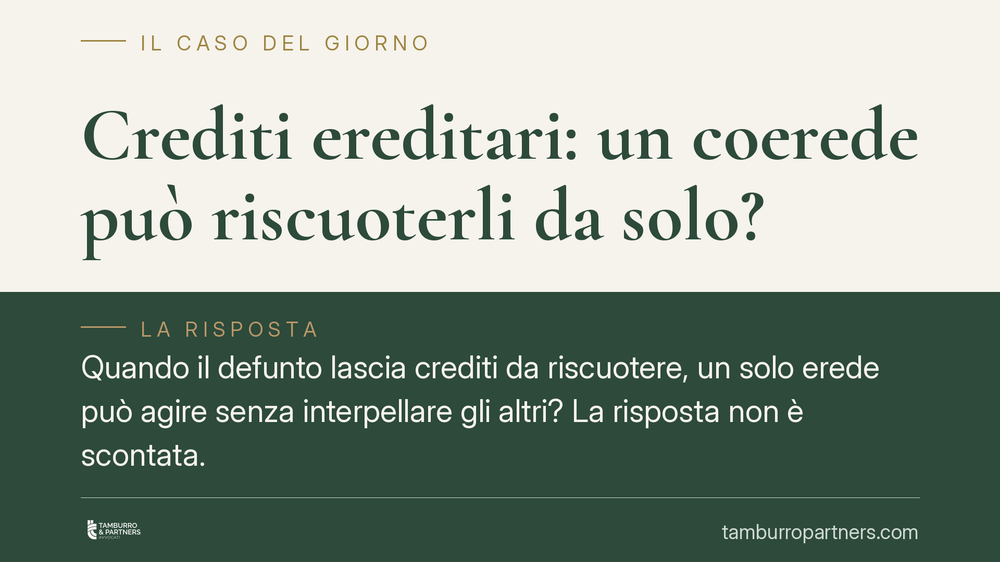

Crediti ereditari: un coerede può riscuoterli da solo?
Quando il defunto lascia crediti da riscuotere, un solo erede può agire senza interpellare gli altri? La risposta non è scontata. Debiti e crediti seguono regole opposte: i primi si dividono da soli, i secondi restano in comunione. Le Sezioni Unite della Cassazione hanno fissato il principio che ancora oggi governa la materia e che conviene conoscere prima di agire.

Il problema: debiti e crediti non seguono la stessa regola
Alla morte di una persona, l'eredità comprende spesso sia debiti sia crediti. L'istinto porta a pensare che si dividano allo stesso modo tra gli eredi. Non è così.
I debiti del defunto si ripartiscono automaticamente tra i coeredi in proporzione alle rispettive quote. Lo dicono con chiarezza l'art. 752 cod. civ. (contribuzione ai debiti in proporzione alla quota) e l'art. 754 cod. civ. (i creditori possono agire contro ciascun erede per la parte corrispondente alla sua quota). Ogni erede risponde solo pro quota, salvo i casi particolari di solidarietà previsti dalla legge.
Per i crediti il meccanismo è diverso. Non si verifica alcuna divisione automatica.
L'inquadramento: i crediti cadono in comunione
Il punto di riferimento è la pronuncia delle Sezioni Unite della Corte di Cassazione n. 24657 del 28 novembre 2007. Le Sezioni Unite hanno chiarito che i crediti del defunto non si dividono automaticamente tra i coeredi come avviene per i debiti, ma entrano a far parte della comunione ereditaria.
La comunione è disciplinata dagli artt. 1100 e seguenti cod. civ. Finché non interviene la divisione, il credito appartiene a tutti i coeredi come massa comune, non frazionata in tante quote autonome.
Da qui la conseguenza pratica: il singolo coerede non può pretendere dal debitore la sola propria quota di credito, perché quella quota non esiste come posizione separata finché l'eredità resta indivisa. L'art. 727 cod. civ. conferma che la divisione riguarda l'intera massa, e solo con l'assegnazione (art. 757 cod. civ.) ciascun erede diventa titolare esclusivo dei beni a lui attribuiti, con effetto retroattivo al momento dell'apertura della successione.
La questione aperta: agire per l'intero nell'interesse comune
Resta un profilo dibattuto. Secondo una ricostruzione seguita in giurisprudenza, il singolo coerede può agire per riscuotere l'intero credito, ma non a proprio vantaggio esclusivo: lo fa nell'interesse della comunione, con l'obbligo di mettere poi la somma a disposizione di tutti in sede di divisione.
Si tratta di un'ipotesi che va maneggiata con cautela. Non equivale a dire che ciascun erede «può incassare da solo e tenersi la sua parte». Chi incassa l'intero lo fa come gestore di un bene comune e deve renderne conto. Il debitore, dal canto suo, ha interesse a liberarsi validamente: pagare a un solo coerede senza le dovute garanzie può esporlo al rischio di dover pagare una seconda volta.
La ratio dell'asimmetria
Perché debiti e crediti si comportano in modo opposto? La logica è di tutela.
La divisione automatica dei debiti protegge il creditore del defunto: gli consente di sapere subito a chi e in quale misura rivolgersi, senza dover attendere la divisione dell'eredità.
Tenere invece i crediti in comunione protegge i coeredi tra loro: evita che uno solo incassi e dissipi somme che spettano a tutti, e preserva l'unità della massa fino alla divisione. È una scelta di equilibrio, non una dimenticanza del legislatore.
Implicazioni pratiche per gli eredi
Se tra i beni ereditari ci sono somme da riscuotere — conti correnti, rimborsi, canoni, risarcimenti — nessun coerede dovrebbe muoversi come se il credito fosse già suo per la sola quota.
Agire senza coordinamento espone a contestazioni degli altri eredi, a contenziosi interni e al rischio che il debitore rifiuti legittimamente il pagamento. Allo stesso tempo, l'inerzia ha un costo: i crediti si prescrivono, e un credito dimenticato può estinguersi.
Cosa fare in concreto
- Censite tutti i crediti del defunto prima di agire: conti, polizze, rimborsi fiscali, somme dovute da terzi. Una ricognizione completa evita iniziative scoordinate.
- Coordinatevi con gli altri coeredi e, dove possibile, agite congiuntamente o con delega scritta. È la via più sicura per ottenere un pagamento liberatorio dal debitore.
- Controllate i termini di prescrizione di ciascun credito: se la scadenza incombe, valutate un atto interruttivo anche in attesa dell'accordo tra eredi.
- Documentate ogni incasso e ogni somma percepita, tenendola distinta e disponibile per la futura divisione. Chi riscuote per la comunione deve poterne rendere conto.
- Verificate la posizione sui debiti, che invece gravano pro quota: pagare oltre la propria quota, salvo i casi di solidarietà, non è dovuto.
*Contributo informativo a cura di Tamburro & Partners - Avv. Giuseppe Tamburro. Non costituisce parere legale.*
Ogni famiglia ha il suo equilibrio.
Separazione, divorzio, affidamento, assegno: se vuoi un confronto riservato su una specifica situazione, scrivi allo studio. Ti rispondiamo entro un giorno lavorativo.